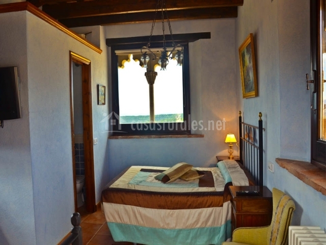
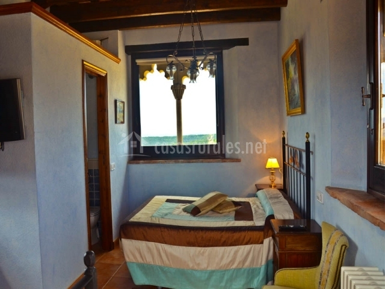

Descripción de Mas postius
Mas Postius una espectacular masía del Siglo XII situada a 850m de altitud en el municipio de
Muntanyola (Osona - Catalunya). La casa ha sido reformada convirtiéndola en un espacio encantador y
habitable a nuestros tiempos. El alojamiento dispone de 10 habitaciones con calefacción, TV, muebles
antiguos y todas con vistas al exterior.
Algunas con baño compartido y la mayoría con baño integrado. Una de las habitaciones tiene bañera de
hidromasaje.
La casa cuenta con comedor, sala de estar, restaurante, huerta, jardín con mobiliario, piscina
climatizada, aparcamiento, animales y mucho terreno para hacer caminatas.
Ofrecemos cocina casera y tradicional. Os esperamos para ofreceros un trato familiar y acogedor.
wifiWi-Fidone
poolPiscina done
fireplaceChimeneadone
local_fire_departmentCalefaccióndone
ac_unitAire acondicionadoclear
petsMascotas permitidasclear
 
